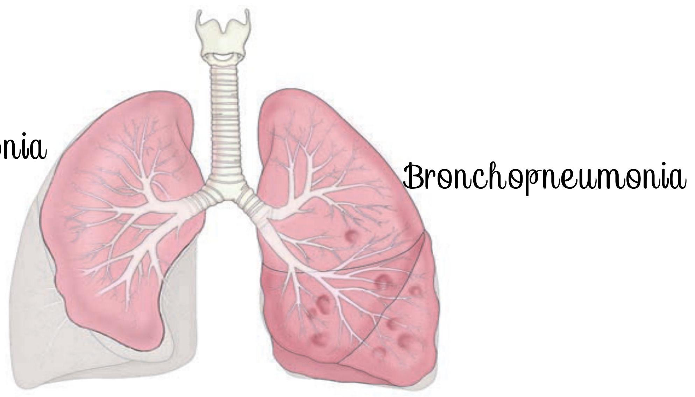
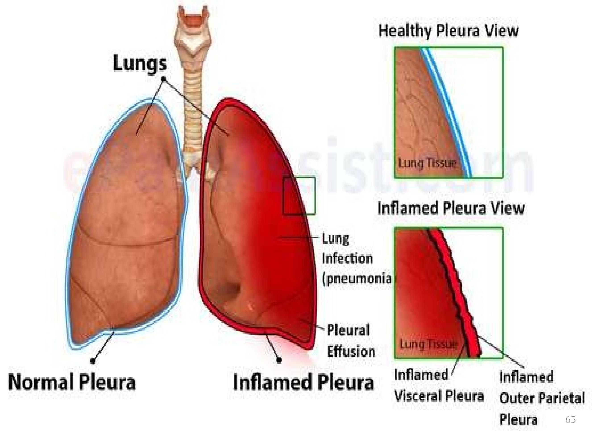
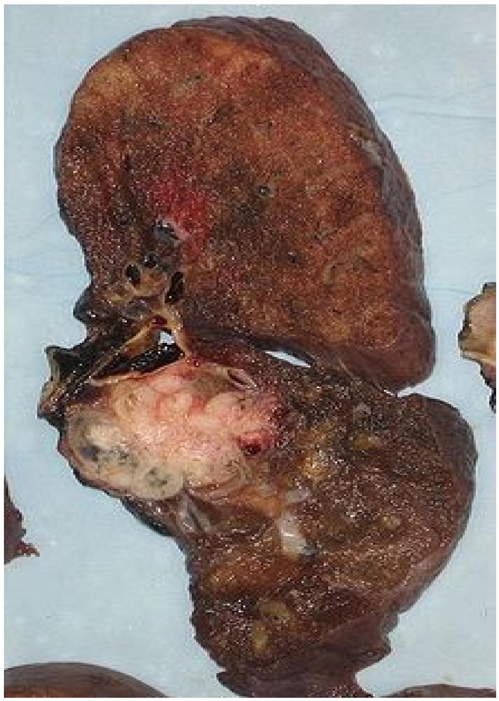
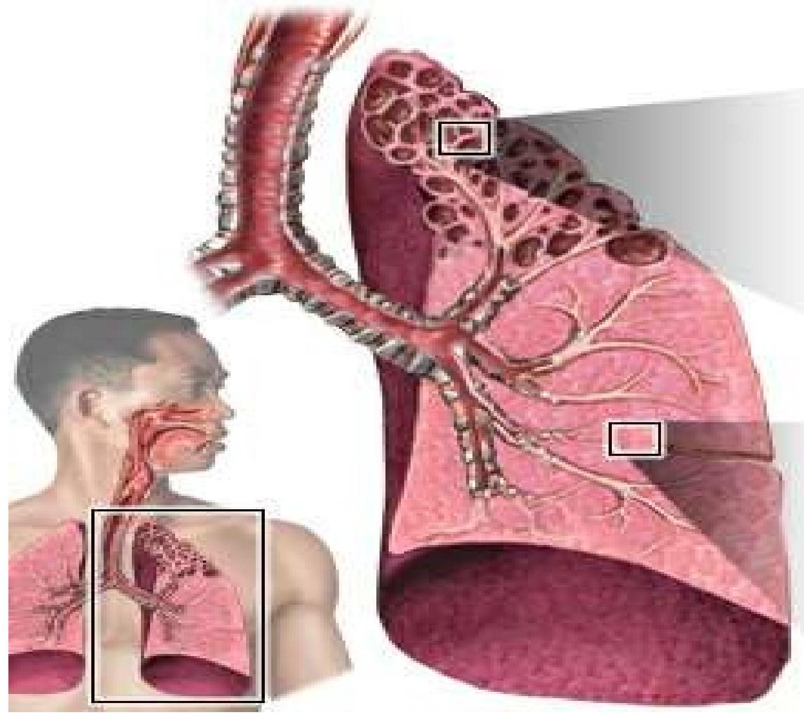
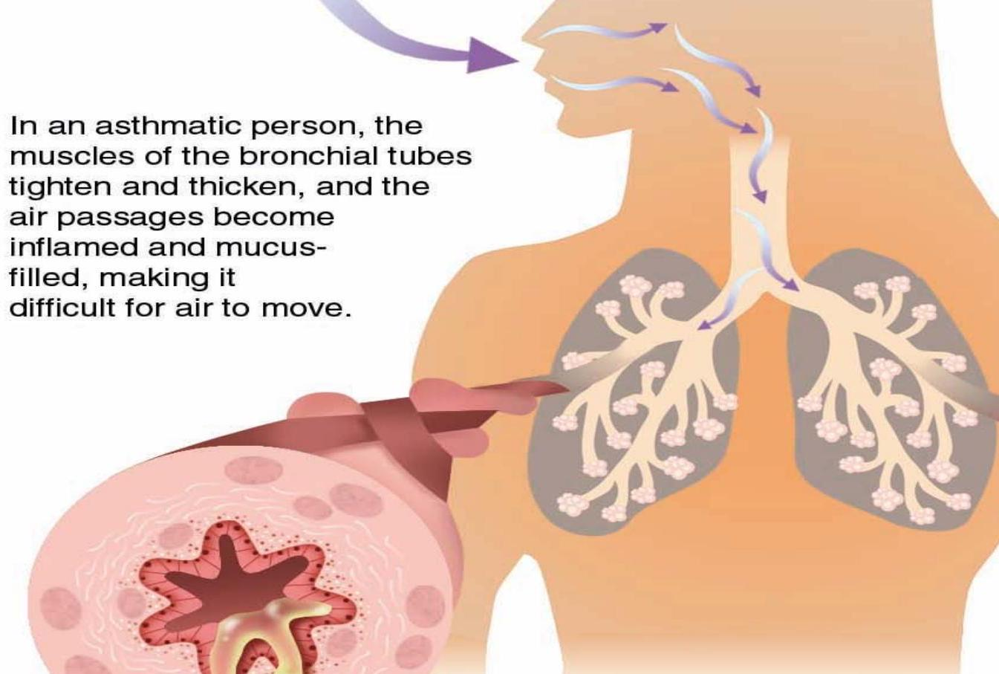

In-Depth Look at Obstructive and Restrictive Diseases
Classification of Respiratory System Disorders
i) Structurally:
- Upper respiratory disorders
- Lower respiratory disorders
ii) Pathologically:
- Infectious disorders (Viral and bacterial)
- Tumors (benign and malignant)
- Traumatic disorders of the respiratory system
iii) Physiologically:
| Restrictive conditions | Obstructive conditions |
|---|---|
|
|
Restrictive Pulmonary Disorders
Pneumonia
Pneumonia is an acute respiratory illness and a condition that involves inflammation of lower lung structures such as the alveoli or interstitial spaces. It can be community acquired, hospital acquired or occurring due to immunosuppression.
Classification of Pneumonia
Pneumonia is classified according to the predisposing environment and the pattern of damage executed in the lungs.
- Community-Acquired Pneumonia (CAP): Occurring in the community setting or within the first 48 hours after hospitalization.
- Hospital-Acquired Pneumonia (HAP): Onset of symptoms more than 48 hours after hospital admission.
- Pneumonia in the Immunocompromised Host: Occurs due to factors like prolonged corticosteroid use, chemotherapy, or AIDS.
- Aspiration Pneumonia: Results from entry of endogenous or exogenous substances into the lower airway.
Pattern of Damage
Lobar pneumonia: Refers to the pneumonia in which a substantial portion of one or more lobes of the lungs is involved.
Bronchopneumonia: The disease is distributed in a patchy fashion, originating from one or more localized areas within the bronchi and extending to the adjacent surrounding lung parenchyma.
Pathophysiology
An infectious organism reaches the alveoli, overwhelming macrophages and resulting in a fibrin-rich exudate that fills alveolar spaces. The inflammatory response also results in a proliferation of neutrophils which can damage lung tissue, leading to fibrosis and pulmonary oedema. These changes result in reduced gaseous exchange and increased respiratory effort.
Clinical Manifestations
- Shaking chills & Fever
- Dry cough (may become productive)
- Muscle aches, Nausea/vomiting
- Rapid breathing and heartbeat
- Difficulty Breathing (Dyspnea)
- Chest pain
Management
The goals of care are to ensure clear breath sounds, normal breathing patterns, and no complications.
- Pharmacotherapy: Antibiotic therapy (e.g., Macrolides, Beta-lactams, Fluoroquinolones), antipyretics, and antitussives.
- Nursing Interventions: Improving airway patency through hydration and chest physiotherapy, promoting rest, maintaining nutrition, monitoring for complications, and patient education.
- Complications: Bacteremia, lung abscess, pleural effusion, respiratory failure.
Pleurisy (Pleuritis)
Pleurisy is the inflammation of the pleura of the lungs (especially the parietal layer). It is most often caused by a viral infection but can result from other conditions like pneumonia, TB, or chest trauma.
Signs and Symptoms
- Sharp, "stabbing" chest pain, worse on inspiration or coughing
- Shallow breathing to avoid pain
- Shortness of breath
- Fever, malaise, joint pain
Management
Objectives are to discover the underlying cause and relieve pain. This includes treating the primary disease (e.g., pneumonia), administering anti-inflammatory drugs and pain relievers, and using bronchodilators. Nurses can help ease painful respiration by positioning the patient on the affected side and teaching them to splint the chest when coughing.
Lung Carcinoma
Lung cancer is a disease characterized by uncontrolled cell growth in tissues of the lung. Most lung cancers are classified into small cell lung cancer (SCLC) and non-small cell lung cancer (NSCLC).
Causes and Risk Factors
- Smoking: By far the main contributor.
- Asbestos & other carcinogens.
- Viruses: May affect the cell cycle.
- Air pollution: Including indoor radon.
Signs and Symptoms
- Dyspnea (shortness of breath)
- Hemoptysis (coughing up blood)
- Chronic cough or change in cough pattern
- Chest pain, wheezing
- Cachexia (weight loss), fatigue
Management
Treatment depends on cell type and stage. It may involve surgery (lobectomy, pneumonectomy), radiation therapy, chemotherapy, or a combination. Palliative care is crucial for managing symptoms and improving quality of life.
Obstructive Pulmonary Disorders
Bronchitis
Bronchitis is an inflammation or swelling of the Bronchial tubes (Bronchi). Individuals with bronchitis breathe less air and oxygen into their lungs; they also have heavy mucus or phlegm forming in their airways. It can be acute or chronic.
- Acute Bronchitis: Often follows a cold or flu, typically viral. Symptoms resolve within weeks.
- Chronic Bronchitis: A form of COPD, defined by a productive cough for at least 3 months in each of two consecutive years.
Pathophysiology
Irritation of the respiratory tract leads to inflammation, resulting in hypersecretion of mucus. In chronic bronchitis, mucous glands hypertrophy and hyperplasia occur, thickening the bronchial walls and narrowing the lumen. This interferes with airflow and increases susceptibility to infection.
Management
Treatment includes bed rest, fluids, cough suppressants (with caution), pain relievers, and antibiotics if a secondary bacterial infection is present. Bronchodilators and mucolytics help open airways and clear mucus.
Chronic Obstructive Pulmonary Disease (COPD)
COPD refers to chronic bronchitis and emphysema, a pair of two commonly co-existing diseases of the lungs in which the airways become narrowed. This leads to a limitation of the flow of air to and from the lungs causing shortness of breath.
Emphysema
Emphysema is defined as enlargement with destruction of the walls of the alveoli. As the alveoli are destroyed the alveolar surface area in contact with the capillaries decreases, reducing gaseous exchange and leading to hypoxia.
Management of COPD/Emphysema
- Medical: Smoking cessation, bronchodilators, oxygen therapy. Surgical options include bullectomy or lung transplantation.
- Nursing: Focuses on improving gas exchange, promoting adequate rest, relieving anxiety, and ensuring effective airway clearance through patient education and physiotherapy.
Bronchial Asthma
Asthma is a chronic inflammatory disorder of the airways characterized by recurrent episodes of wheezing, breathlessness, chest tightness, and cough. It involves reversible bronchospasm and airway "hyperactivity".
Pathophysiology
Exposure to a trigger causes mast cells to release inflammatory mediators (histamine, prostaglandins), leading to bronchospasm, edema, and excess mucus production. This obstructs the airways, making expiration more difficult than inspiration, which causes a wheeze.
Management
- Quick-relief medications: Short-acting beta2-agonists (e.g., salbutamol) for immediate relief.
- Long-acting control medications: Corticosteroids (inhaled/oral), leukotriene modifiers, and cromolyn sodium to manage chronic inflammation.
- Nursing Care: Assess respiratory status, administer medications, provide reassurance, and educate the patient on trigger avoidance and proper inhaler technique.
Status Asthmaticus
A prolonged and severe asthma attack that does not respond to standard treatment and can last for more than 24 hours. It is a life-threatening emergency.
Treatment
Requires aggressive management including high-concentration oxygen, nebulized bronchodilators (salbutamol), IV corticosteroids (hydrocortisone), and IV fluids. Mechanical ventilation may be necessary if the patient fails to respond.
Bronchiectasis
A chronic, irreversible dilation of the bronchi and bronchioles, often resulting from prolonged injury or inflammation. Damaged air passages allow bacteria and mucus to build up, leading to frequent infections.
Management
Focuses on promoting bronchial drainage (postural drainage, chest physiotherapy), controlling infection with antibiotics, and using bronchodilators. Smoking cessation is critical.
Bronchiolitis
A common lung infection in young children and infants causing inflammation and congestion in the small airways (bronchioles). It is almost always caused by a virus, most commonly Respiratory Syncytial Virus (RSV).
Management
Most children are managed at home with supportive care. Since it's viral, antibiotics are not effective unless there is a secondary bacterial infection. A very small percentage of children require hospitalization for oxygen and hydration support.